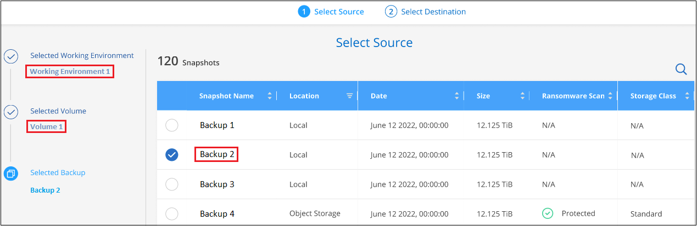

Notes de mise à jour
Notes de mise à jour
Restaurez les données ONTAP à partir de fichiers de sauvegarde
 Suggérer des modifications
Suggérer des modifications
Les sauvegardes de vos données de volume ONTAP sont disponibles aux emplacements où vous avez créé des sauvegardes : copies Snapshot, volumes répliqués et sauvegardes stockées dans le stockage objet. Vous pouvez restaurer les données à un point dans le temps à partir de ces emplacements de sauvegarde. Vous pouvez restaurer un volume ONTAP complet à partir d'un fichier de sauvegarde ou, si vous n'avez besoin que de restaurer quelques fichiers, vous pouvez restaurer un dossier ou des fichiers individuels.
-
Vous pouvez restaurer un volume (en tant que nouveau volume) dans l'environnement de travail d'origine, vers un environnement de travail différent qui utilise le même compte cloud ou sur un système ONTAP sur site.
-
Vous pouvez restaurer un dossier sur un volume de l'environnement de travail d'origine, sur un volume dans un environnement de travail différent qui utilise le même compte cloud ou sur un volume situé sur un système ONTAP sur site.
-
Vous pouvez restaurer les fichiers sur un volume de l'environnement de travail d'origine, sur un volume dans un autre environnement de travail qui utilise le même compte cloud ou sur un volume d'un système ONTAP sur site.
Une licence de sauvegarde et de restauration BlueXP valide est requise pour restaurer les données à partir de fichiers de sauvegarde vers un système de production.
En résumé, il s'agit des flux valides que vous pouvez utiliser pour restaurer les données de volume dans un environnement de travail ONTAP :
-
Fichier de sauvegarde → volume restauré
-
Volume répliqué → volume restauré
-
Copie Snapshot → volume restauré
Le tableau de bord de restauration
Le tableau de bord de restauration permet d'effectuer des opérations de restauration de volumes, de dossiers et de fichiers. Pour accéder au Tableau de bord de restauration, cliquez sur Backup and Recovery dans le menu BlueXP, puis cliquez sur l'onglet Restore. Vous pouvez également cliquer sur  > Afficher le tableau de bord de restauration à partir du service de sauvegarde et de récupération du panneau Services.
> Afficher le tableau de bord de restauration à partir du service de sauvegarde et de récupération du panneau Services.

|
La sauvegarde et la restauration BlueXP doivent déjà être activées pour au moins un environnement de travail, et les fichiers de sauvegarde initiaux doivent exister. |

Comme vous pouvez le voir, le tableau de bord de restauration propose deux façons différentes de restaurer des données à partir de fichiers de sauvegarde : Browse & Restore et Search & Restore.
Comparer l'utilisation et la restauration et la recherche et la restauration
En termes généraux, Browse & Restore est généralement mieux lorsque vous devez restaurer un volume, un dossier ou un fichier spécifique de la semaine ou du mois précédent — vous connaissez le nom et l'emplacement du fichier, et la date à laquelle il a été en bonne forme. Search & Restore est généralement préférable lorsque vous devez restaurer un volume, un dossier ou un fichier, mais vous ne vous souvenez pas du nom exact, du volume dans lequel il réside, ou de la date à laquelle il était en forme.
Ce tableau fournit une comparaison des caractéristiques des 2 méthodes.
| Parcourir et restaurer | Recherche et restauration |
|---|---|
Parcourez une structure de style dossier pour trouver le volume, le dossier ou le fichier dans un seul fichier de sauvegarde. |
Recherchez un volume, un dossier ou un fichier dans tous les fichiers de sauvegarde par nom de volume partiel ou complet, nom de dossier ou de fichier partiel ou complet, plage de taille et filtres de recherche supplémentaires. |
Ne gère pas la restauration de fichier si le fichier a été supprimé ou renommé et si l'utilisateur ne connaît pas le nom du fichier d'origine |
Gère les répertoires nouvellement créés/supprimés/renommés et les fichiers nouvellement créés/supprimés/renommés |
Aucune ressource supplémentaire n'est requise du fournisseur de cloud |
Lorsque vous effectuez une restauration à partir du cloud, des ressources supplémentaires de compartiment et de fournisseur de cloud public sont requises par compte. |
Aucun coût supplémentaire n'est requis du fournisseur de cloud |
Lorsque vous effectuez une restauration à partir du cloud, des coûts supplémentaires sont requis lors de l'analyse de vos sauvegardes et volumes pour obtenir les résultats de la recherche. |
La restauration rapide est prise en charge. |
La restauration rapide n'est pas prise en charge. |
Ce tableau fournit une liste des opérations de restauration valides en fonction de l'emplacement où se trouvent vos fichiers de sauvegarde.
| Type de sauvegarde | Parcourir et restaurer | Recherche et restauration | ||||
|---|---|---|---|---|---|---|
Restaurer le volume |
Restaurer les fichiers |
Restaurer le dossier |
Restaurer le volume |
Restaurer les fichiers |
Restaurer le dossier |
|
La copie Snapshot |
Oui. |
Non |
Non |
Oui. |
Oui. |
Oui. |
Volume répliqué |
Oui. |
Non |
Non |
Oui. |
Oui. |
Oui. |
Fichier de sauvegarde |
Oui. |
Oui. |
Oui. |
Oui. |
Oui. |
Oui. |
Avant de pouvoir utiliser l'une ou l'autre méthode de restauration, assurez-vous d'avoir configuré votre environnement en fonction des besoins de ressources uniques. Ces exigences sont décrites dans les sections ci-dessous.
Reportez-vous aux étapes de configuration requise et de restauration pour le type d'opération de restauration que vous souhaitez utiliser :
-
<<Restoring volumes using Browse & Restore,Restaurez les volumes à l'aide de Browse ; restaurez
-
<<Restoring folders and files using Browse & Restore,Restaurez les dossiers et les fichiers à l'aide de Browse Restore
-
<<Restoring ONTAP data using Search & Restore,Restaurez des volumes, des dossiers et des fichiers à l'aide de Search ; Restore
Restaurer les données ONTAP à l'aide de la fonction Parcourir et restaurer
Avant de commencer à restaurer un volume, un dossier ou un fichier, vous devez connaître le nom du volume à partir duquel vous souhaitez restaurer, le nom de l'environnement de travail et le SVM où réside le volume, ainsi que la date approximative du fichier de sauvegarde à restaurer. Vous pouvez restaurer des données ONTAP à partir d'une copie Snapshot, d'un volume répliqué ou de sauvegardes stockées dans le stockage objet.
Remarque : si le fichier de sauvegarde contenant les données que vous souhaitez restaurer réside dans le stockage cloud d'archivage (à partir de ONTAP 9.10.1), l'opération de restauration prendra plus de temps et entraînera un coût. De plus, le cluster de destination doit également exécuter ONTAP 9.10.1 ou une version ultérieure pour la restauration des volumes, 9.11.1 pour la restauration des fichiers, 9.12.1 pour les archives Google et StorageGRID et 9.13.1 pour la restauration des dossiers.
|
|
La priorité élevée n'est pas prise en charge lors de la restauration de données à partir du stockage d'archives Azure vers les systèmes StorageGRID. |
Parcourir et restaurer les environnements de travail et les fournisseurs de stockage objet pris en charge
Vous pouvez restaurer des données ONTAP à partir d'un fichier de sauvegarde résidant dans un environnement de travail secondaire (un volume répliqué) ou dans un stockage objet (un fichier de sauvegarde) vers les environnements de travail suivants. Les copies Snapshot résident dans l'environnement de travail source et ne peuvent être restaurées que sur le même système.
Remarque : vous pouvez restaurer un volume à partir de n'importe quel type de fichier de sauvegarde, mais vous ne pouvez restaurer un dossier ou des fichiers individuels qu'à partir d'un fichier de sauvegarde dans le stockage objet à ce stade.
| À partir du magasin d'objets (sauvegarde) | De primaire (instantané) | À partir du système secondaire (réplication) | Vers l'environnement de travail de destination |
|---|---|---|---|
Amazon S3 |
Cloud Volumes ONTAP dans AWS |
Cloud Volumes ONTAP dans AWS |
Blob d'Azure |
Cloud Volumes ONTAP dans Azure |
Cloud Volumes ONTAP dans Azure |
Google Cloud Storage |
Cloud Volumes ONTAP dans Google |
Cloud Volumes ONTAP dans le système ONTAP sur site Google endif::gcp[] |
NetApp StorageGRID |
Système ONTAP sur site |
Système ONTAP sur site |
Vers le système ONTAP sur site |
ONTAP S3 |
Système ONTAP sur site |
Système ONTAP sur site |
Pour l'utilisation et la restauration, le connecteur peut être installé aux emplacements suivants :
-
Pour Amazon S3, le connecteur peut être déployé dans AWS ou dans votre site
-
Pour StorageGRID, le connecteur doit être déployé sur site, avec ou sans accès à Internet
-
Pour ONTAP S3, le connecteur peut être déployé dans vos locaux (avec ou sans accès à Internet) ou dans un environnement de fournisseur cloud
Notez que les références aux « systèmes ONTAP sur site » incluent les systèmes FAS, AFF et ONTAP Select.
|
|
Si la version ONTAP de votre système est inférieure à 9.13.1, vous ne pouvez pas restaurer de dossiers ou de fichiers si le fichier de sauvegarde a été configuré avec DataLock & ransomware. Dans ce cas, vous pouvez restaurer tout le volume à partir du fichier de sauvegarde, puis accéder aux fichiers dont vous avez besoin. |
Restaurez les volumes à l'aide de Browse & ; restaurez
Lorsque vous restaurez un volume à partir d'un fichier de sauvegarde, la sauvegarde et la restauration BlueXP créent un nouveau volume en utilisant les données de la sauvegarde. Lors de l'utilisation d'une sauvegarde à partir d'un stockage objet, vous pouvez restaurer les données sur un volume de l'environnement de travail d'origine, dans un environnement de travail différent situé dans le même compte cloud que l'environnement de travail source ou sur un système ONTAP sur site.
Lors de la restauration d'une sauvegarde cloud sur un système Cloud Volumes ONTAP utilisant ONTAP 9.13.0 ou une version ultérieure ou sur un système ONTAP sur site exécutant ONTAP 9.14.1, vous pouvez effectuer une opération de restauration _rapide. La restauration rapide est idéale pour les reprises après incident où vous devez fournir un accès à un volume dès que possible. Une restauration rapide restaure les métadonnées du fichier de sauvegarde sur un volume au lieu de restaurer l'intégralité du fichier de sauvegarde. La restauration rapide n'est pas recommandée pour les applications sensibles aux performances ou à la latence, et elle n'est pas prise en charge avec les sauvegardes du stockage d'archives.
|
|
La restauration rapide est prise en charge pour les volumes FlexGroup uniquement si le système source à partir duquel la sauvegarde cloud a été créée exécutait ONTAP 9.12.1 ou version ultérieure. De plus, elle n'est prise en charge pour les volumes SnapLock que si le système source exécutait ONTAP 9.11.0 ou une version ultérieure. |
Lors de la restauration à partir d'un volume répliqué, vous pouvez restaurer le volume dans l'environnement de travail d'origine ou dans un système Cloud Volumes ONTAP ou ONTAP sur site.

Comme vous pouvez le voir, vous devez connaître le nom de l'environnement de travail source, la machine virtuelle de stockage, le nom du volume et la date du fichier de sauvegarde pour effectuer une restauration de volume.
La vidéo suivante montre une présentation rapide de la restauration d'un volume :
-
Dans le menu BlueXP, sélectionnez protection > sauvegarde et récupération.
-
Cliquez sur l'onglet Restore pour afficher le tableau de bord de restauration.
-
Dans la section Browse & Restore, cliquez sur Restore Volume.

-
Dans la page Select Source, accédez au fichier de sauvegarde du volume que vous souhaitez restaurer. Sélectionnez le Environnement de travail, le Volume et le fichier Backup dont l'horodatage doit être restauré.
La colonne Location indique si le fichier de sauvegarde (instantané) est local (une copie Snapshot sur le système source), Secondary (un volume répliqué sur un système ONTAP secondaire) ou Object Storage (un fichier de sauvegarde dans le stockage objet). Choisissez le fichier à restaurer.

-
Cliquez sur Suivant.
Si vous sélectionnez un fichier de sauvegarde dans le stockage objet et que la protection contre les ransomware est active pour cette sauvegarde (si vous avez activé DataLock et la protection contre les ransomware dans la politique de sauvegarde), vous êtes invité à exécuter une analyse supplémentaire par ransomware sur le fichier de sauvegarde avant de restaurer les données. Nous vous recommandons de scanner le fichier de sauvegarde à des fins d'attaques par ransomware. (Vos fournisseurs de cloud s'exposent à des frais de sortie supplémentaires pour accéder au contenu du fichier de sauvegarde.)
-
Dans la page Select destination, sélectionnez Environnement de travail où vous souhaitez restaurer le volume.

-
Lors de la restauration d'un fichier de sauvegarde à partir d'un stockage objet, si vous sélectionnez un système ONTAP sur site et que vous n'avez pas déjà configuré la connexion au cluster sur le stockage objet, vous êtes invité à fournir des informations supplémentaires :
-
Lors de la restauration depuis Amazon S3, sélectionnez l'IPspace dans le cluster ONTAP où se trouve le volume de destination, entrez la clé d'accès et la clé secrète pour l'utilisateur créé pour donner l'accès au cluster ONTAP au compartiment S3, Il est également possible de choisir un terminal VPC privé pour sécuriser le transfert de données.
-
Lors de la restauration à partir de StorageGRID, entrez le FQDN du serveur StorageGRID et le port que ONTAP doit utiliser pour la communication HTTPS avec StorageGRID, sélectionnez la clé d'accès et la clé secrète nécessaires pour accéder au stockage objet, et l'IPspace dans le cluster ONTAP où le volume de destination résidera.
-
Lors d'une restauration à partir de ONTAP S3, entrez le nom de domaine complet du serveur ONTAP S3 et le port que ONTAP doit utiliser pour les communications HTTPS avec ONTAP S3, sélectionnez la clé d'accès et la clé secrète requises pour accéder au stockage objet. et l'IPspace dans le cluster ONTAP où le volume de destination sera hébergé.
-
Entrez le nom à utiliser pour le volume restauré, puis sélectionnez le VM de stockage et l'agrégat dans lequel le volume sera stocké. Lors de la restauration d'un volume FlexGroup, vous devez sélectionner plusieurs agrégats. Par défaut, <source_volume_name>_restore est utilisé comme nom de volume.

Lors de la restauration d'une sauvegarde à partir d'un stockage objet vers un système Cloud Volumes ONTAP utilisant ONTAP 9.13.0 ou une version ultérieure, ou vers un système ONTAP sur site exécutant ONTAP 9.14.1, vous avez la possibilité d'effectuer une opération de restauration rapide.
-
Et si vous restaurez le volume à partir d'un fichier de sauvegarde résidant sur un niveau de stockage d'archives (disponible à partir de ONTAP 9.10.1), vous pouvez sélectionner la priorité de restauration.
-
-
-
Cliquez sur Suivant pour choisir d'effectuer une restauration normale ou rapide :

-
Restauration normale : utilisez la restauration normale sur les volumes qui exigent des performances élevées. Les volumes ne seront pas disponibles tant que le processus de restauration n'est pas terminé.
-
Restauration rapide : les volumes restaurés et les données seront disponibles immédiatement. Ne l'utilisez pas sur des volumes qui exigent des performances élevées car pendant le processus de restauration rapide, l'accès aux données peut être plus lent que d'habitude.
-
-
Cliquez sur Restaurer et vous revenez au Tableau de bord de restauration pour vérifier la progression de l'opération de restauration.
BlueXP Backup and Recovery crée un volume basé sur la sauvegarde que vous avez sélectionnée.
Notez que la restauration d'un volume à partir d'un fichier de sauvegarde qui réside dans le stockage d'archivage peut prendre plusieurs minutes ou heures, selon le niveau d'archivage et la priorité de restauration. Vous pouvez cliquer sur l'onglet surveillance des travaux pour voir la progression de la restauration.
Restaurez les dossiers et les fichiers à l'aide de Browse & Restore
Si vous n'avez besoin de restaurer que quelques fichiers depuis la sauvegarde d'un volume ONTAP, vous avez la possibilité de restaurer un dossier ou des fichiers individuels au lieu de restaurer tout le volume. Vous pouvez restaurer des dossiers et des fichiers vers un volume existant dans l'environnement de travail d'origine ou vers un autre environnement de travail utilisant le même compte cloud. Vous pouvez également restaurer des dossiers et des fichiers vers un volume situé sur un système ONTAP sur site.
|
|
À ce stade, vous ne pouvez restaurer un dossier ou des fichiers individuels qu'à partir d'un fichier de sauvegarde dans le stockage objet. La restauration de fichiers et de dossiers n'est actuellement pas prise en charge à partir d'une copie Snapshot locale ou d'un fichier de sauvegarde résidant dans un environnement de travail secondaire (volume répliqué). |
Si vous sélectionnez plusieurs fichiers, tous les fichiers sont restaurés sur le même volume de destination que vous choisissez. Si vous souhaitez restaurer des fichiers sur différents volumes, vous devez exécuter le processus de restauration plusieurs fois.
Si vous utilisez ONTAP 9.13.0 ou une version ultérieure, vous pouvez restaurer un dossier avec tous les fichiers et sous-dossiers qu'il contient. Lorsque vous utilisez une version de ONTAP antérieure à 9.13.0, seuls les fichiers de ce dossier sont restaurés - aucun sous-dossier, ni fichier dans des sous-dossiers, ne sont restaurés.
|
|
|
Prérequis
-
La version ONTAP doit être 9.6 ou supérieure pour effectuer des opérations file restore.
-
La version ONTAP doit être 9.11.1 ou supérieure pour effectuer des opérations folder restore. ONTAP version 9.13.1 est requis si les données se trouvent dans un stockage d'archivage ou si le fichier de sauvegarde utilise DataLock et la protection contre les ransomware.
Processus de restauration des dossiers et des fichiers
Le processus se présente comme suit :
-
Lorsque vous souhaitez restaurer un dossier ou un ou plusieurs fichiers à partir d'une sauvegarde de volume, cliquez sur l'onglet Restaurer, puis sur Restaurer les fichiers ou le dossier sous Parcourir et Restaurer.
-
Sélectionnez l'environnement de travail source, le volume et le fichier de sauvegarde dans lequel le dossier ou le fichier(s) résident(s).
-
La sauvegarde et la restauration BlueXP affiche les dossiers et les fichiers qui existent dans le fichier de sauvegarde sélectionné.
-
Sélectionnez le ou les fichiers que vous souhaitez restaurer à partir de cette sauvegarde.
-
Sélectionnez l'emplacement de destination où vous souhaitez restaurer le dossier ou le fichier(s) (l'environnement de travail, le volume et le dossier), puis cliquez sur Restaurer.
-
Les fichiers sont restaurés.

Comme vous pouvez le voir, vous devez connaître le nom de l'environnement de travail, le nom du volume, la date du fichier de sauvegarde et le nom du dossier/fichier pour effectuer la restauration d'un dossier ou d'un fichier.
Restaurer des dossiers et des fichiers
Procédez comme suit pour restaurer des dossiers ou des fichiers vers un volume à partir d'une sauvegarde de volume ONTAP. Vous devez connaître le nom du volume et la date du fichier de sauvegarde que vous souhaitez utiliser pour restaurer le dossier ou le(s) fichier(s). Cette fonctionnalité utilise la navigation en direct pour afficher la liste des répertoires et des fichiers de chaque fichier de sauvegarde.
La vidéo suivante montre une présentation rapide de la restauration d'un seul fichier :
-
Dans le menu BlueXP, sélectionnez protection > sauvegarde et récupération.
-
Cliquez sur l'onglet Restore pour afficher le tableau de bord de restauration.
-
Dans la section Browse & Restore, cliquez sur Restore files ou Folder.

-
Dans la page Select Source, accédez au fichier de sauvegarde du volume contenant le ou les fichiers à restaurer. Sélectionnez Environnement de travail, Volume et Backup qui possède l'horodatage à partir duquel vous souhaitez restaurer les fichiers.

-
Cliquez sur Suivant et la liste des dossiers et fichiers de la sauvegarde de volume s'affiche.
Si vous restaurez des dossiers ou des fichiers à partir d'un fichier de sauvegarde qui réside dans un niveau de stockage d'archives, vous pouvez sélectionner la priorité de restauration.
+
Si la protection contre les ransomware est active pour le fichier de sauvegarde (si vous avez activé DataLock et la protection contre les ransomware dans la politique de sauvegarde), vous êtes invité à exécuter une analyse supplémentaire contre les ransomware sur le fichier de sauvegarde avant de restaurer les données. Nous vous recommandons de scanner le fichier de sauvegarde à des fins d'attaques par ransomware. (Vos fournisseurs de cloud s'exposent à des frais de sortie supplémentaires pour accéder au contenu du fichier de sauvegarde.)
+
-
Dans la page Select Items, sélectionnez le ou les fichiers que vous souhaitez restaurer et cliquez sur Continuer. Pour vous aider à trouver l'élément :
-
Vous pouvez cliquer sur le nom du dossier ou du fichier si vous le voyez.
-
Vous pouvez cliquer sur l'icône de recherche et saisir le nom du dossier ou du fichier pour naviguer directement vers l'élément.
-
Vous pouvez naviguer vers le bas niveaux dans les dossiers à l'aide de
 à la fin de la ligne pour trouver des fichiers spécifiques.
à la fin de la ligne pour trouver des fichiers spécifiques.Lorsque vous sélectionnez des fichiers, ils sont ajoutés à gauche de la page pour voir les fichiers que vous avez déjà sélectionnés. Si nécessaire, vous pouvez supprimer un fichier de cette liste en cliquant sur x en regard du nom du fichier.
-
-
Dans la page Select destination, sélectionnez Environnement de travail où vous souhaitez restaurer les éléments.

Si vous sélectionnez un cluster sur site et que vous n'avez pas encore configuré la connexion de cluster au stockage objet, vous êtes invité à fournir des informations supplémentaires :
-
Lors de la restauration depuis Amazon S3, entrez l'IPspace dans le cluster ONTAP où réside le volume de destination, ainsi que la clé d'accès AWS et la clé secrète nécessaires pour accéder au stockage objet. Vous pouvez également sélectionner une configuration de liaison privée pour la connexion au cluster.
-
Lors d'une restauration à partir de StorageGRID, entrez le FQDN du serveur StorageGRID et le port que ONTAP doit utiliser pour la communication HTTPS avec StorageGRID, entrez la clé d'accès et la clé secrète nécessaires pour accéder au stockage objet, et l'IPspace dans le cluster ONTAP où réside le volume de destination.
-
Sélectionnez ensuite le Volume et le dossier où vous souhaitez restaurer le ou les dossiers.

-
-
Vous disposez de quelques options pour l'emplacement de restauration des dossiers et des fichiers.
-
Lorsque vous avez choisi Sélectionner le dossier cible, comme indiqué ci-dessus :
-
Vous pouvez sélectionner n'importe quel dossier.
-
Vous pouvez passer le curseur de la souris sur un dossier et cliquer sur
à la fin de la ligne pour accéder aux sous-dossiers, puis sélectionner un dossier.
-
-
Si vous avez sélectionné le même environnement de travail et le même volume que le dossier/fichier source, vous pouvez sélectionner gérer le chemin du dossier source pour restaurer le dossier ou les fichiers dans le dossier où ils existent dans la structure source. Tous les mêmes dossiers et sous-dossiers doivent déjà exister ; les dossiers ne sont pas créés. Lorsque vous restaurez les fichiers à leur emplacement d'origine, vous pouvez choisir d'écraser le ou les fichiers source ou de créer de nouveaux fichiers.
-
Cliquez sur Restaurer et vous revenez au Tableau de bord de restauration pour vérifier la progression de l'opération de restauration. Vous pouvez également cliquer sur l'onglet surveillance des travaux pour voir la progression de la restauration.
-
-
Restauration de données ONTAP à l'aide de la fonction de recherche et de restauration
Vous pouvez restaurer un volume, un dossier ou des fichiers à partir d'un fichier de sauvegarde ONTAP à l'aide de la fonction Rechercher et restaurer. La fonction Search & Restore vous permet de rechercher un volume, un dossier ou un fichier spécifique dans toutes les sauvegardes, puis d'effectuer une restauration. Vous n'avez pas besoin de connaître le nom exact de l'environnement de travail, le nom du volume ou le nom du fichier : la recherche examine tous les fichiers de sauvegarde de volume.
L'opération de recherche examine toutes les copies Snapshot locales existantes pour vos volumes ONTAP, tous les volumes répliqués sur les systèmes de stockage secondaires et tous les fichiers de sauvegarde présents dans le stockage objet. Étant donné que la restauration de données à partir d'une copie Snapshot locale ou d'un volume répliqué peut être plus rapide et moins coûteuse que la restauration à partir d'un fichier de sauvegarde dans un stockage objet, vous pouvez également restaurer les données à partir de ces autres emplacements.
Lorsque vous restaurez un volume complet à partir d'un fichier de sauvegarde, la sauvegarde et la restauration BlueXP créent un nouveau volume en utilisant les données de la sauvegarde. Vous pouvez restaurer les données en tant que volume dans l'environnement de travail d'origine, dans un autre environnement de travail situé dans le même compte cloud que l'environnement de travail source ou dans un système ONTAP sur site.
Vous pouvez restaurer des dossiers ou des fichiers à l'emplacement du volume d'origine, sur un volume différent dans le même environnement de travail, dans un autre environnement de travail qui utilise le même compte cloud ou sur un volume d'un système ONTAP sur site.
Si vous utilisez ONTAP 9.13.0 ou une version ultérieure, vous pouvez restaurer un dossier avec tous les fichiers et sous-dossiers qu'il contient. Lorsque vous utilisez une version de ONTAP antérieure à 9.13.0, seuls les fichiers de ce dossier sont restaurés - aucun sous-dossier, ni fichier dans des sous-dossiers, ne sont restaurés.
Si le fichier de sauvegarde du volume que vous souhaitez restaurer se trouve dans le stockage d'archives (disponible à partir de ONTAP 9.10.1), l'opération de restauration prend plus de temps et entraînera des coûts supplémentaires. Notez que le cluster de destination doit également exécuter ONTAP 9.10.1 ou une version ultérieure pour la restauration des volumes, 9.11.1 pour la restauration des fichiers, 9.12.1 pour les archives Google et StorageGRID et 9.13.1 pour la restauration des dossiers.
|
|
|
Avant de commencer, vous devriez avoir une idée du nom ou de l'emplacement du volume ou du fichier à restaurer.
La vidéo suivante montre une présentation rapide de la restauration d'un seul fichier :
Rechercher et restaurer les environnements de travail et les fournisseurs de stockage objet pris en charge
Vous pouvez restaurer des données ONTAP à partir d'un fichier de sauvegarde résidant dans un environnement de travail secondaire (un volume répliqué) ou dans un stockage objet (un fichier de sauvegarde) vers les environnements de travail suivants. Les copies Snapshot résident dans l'environnement de travail source et ne peuvent être restaurées que sur le même système.
Remarque : vous pouvez restaurer des volumes et des fichiers à partir de n'importe quel type de fichier de sauvegarde, mais vous ne pouvez restaurer un dossier qu'à partir de fichiers de sauvegarde dans le stockage objet à ce stade.
| Emplacement du fichier de sauvegarde | Environnement de travail de destination | |
|---|---|---|
Magasin d'objets (sauvegarde) |
Système secondaire (réplication) |
ifdef::aws[] |
Amazon S3 |
Cloud Volumes ONTAP dans AWS |
Cloud Volumes ONTAP dans le système ONTAP sur site AWS endif::aws[] ifdef::Azure[] |
Blob d'Azure |
Cloud Volumes ONTAP dans Azure |
Cloud Volumes ONTAP dans le système ONTAP sur site Azure endif::Azure[] ifdef::gcp[] |
Google Cloud Storage |
Cloud Volumes ONTAP dans Google |
Cloud Volumes ONTAP dans le système ONTAP sur site Google endif::gcp[] |
NetApp StorageGRID |
Système ONTAP sur site |
Système ONTAP sur site |
ONTAP S3 |
Système ONTAP sur site |
Système ONTAP sur site |
Pour la recherche et la restauration, le connecteur peut être installé aux emplacements suivants :
-
Pour Amazon S3, le connecteur peut être déployé dans AWS ou dans votre site
-
Pour StorageGRID, le connecteur doit être déployé sur site, avec ou sans accès à Internet
-
Pour ONTAP S3, le connecteur peut être déployé dans vos locaux (avec ou sans accès à Internet) ou dans un environnement de fournisseur cloud
Notez que les références aux « systèmes ONTAP sur site » incluent les systèmes FAS, AFF et ONTAP Select.
Prérequis
-
Configuration requise pour le cluster :
-
La version ONTAP doit être supérieure ou égale à 9.8.
-
La VM de stockage (SVM) sur laquelle réside le volume doit avoir une LIF de données configurée.
-
NFS doit être activé sur le volume (les volumes NFS et SMB/CIFS sont pris en charge).
-
Le serveur RPC SnapDiff doit être activé sur le SVM. BlueXP le fait automatiquement lorsque vous activez l'indexation sur l'environnement de travail. (SnapDiff est la technologie qui identifie rapidement les différences entre les fichiers et les répertoires entre les copies Snapshot.)
-
-
Configuration AWS requise :
-
Des autorisations spécifiques pour Amazon Athena, AWS Glue et AWS S3 doivent être ajoutées au rôle utilisateur qui fournit les autorisations BlueXP. "Assurez-vous que toutes les autorisations sont correctement configurées".
Notez que si vous utilisiez déjà la sauvegarde et la restauration BlueXP avec un connecteur que vous avez configuré auparavant, vous devez ajouter les autorisations Athena et Glue au rôle utilisateur BlueXP dès maintenant. Elles sont requises pour la recherche et la restauration.
-
-
Exigences d'StorageGRID et d'ONTAP S3 :
En fonction de votre configuration, la recherche et la restauration peuvent être mises en œuvre de deux façons :
-
S'il n'y a pas d'identifiants de fournisseur de cloud dans votre compte, les informations de catalogue indexées sont stockées sur le connecteur.
-
Si vous utilisez un connecteur dans un site privé (sombre), les informations du catalogue indexé sont stockées sur le connecteur (nécessite la version 3.9.25 ou ultérieure du connecteur).
-
Si vous l'avez "Identifiants AWS" ou "Identifiants Azure" Dans le compte, le catalogue indexé est stocké sur le fournisseur cloud, comme avec un connecteur déployé dans le cloud. (Si vous disposez des deux identifiants, AWS est sélectionné par défaut.)
Même si vous utilisez un connecteur sur site, les exigences du fournisseur cloud doivent être respectées tant pour les autorisations de connecteur que pour les ressources du fournisseur cloud. Consultez les exigences AWS et Azure ci-dessus lors de l'utilisation de cette implémentation.
-
Processus de recherche et de restauration
Le processus se présente comme suit :
-
Avant de pouvoir utiliser la fonction de recherche et de restauration, vous devez activer « indexation » sur chaque environnement de travail source à partir duquel vous souhaitez restaurer les données du volume. Cela permet au catalogue indexé de suivre les fichiers de sauvegarde pour chaque volume.
-
Lorsque vous souhaitez restaurer un ou plusieurs volumes à partir d'une sauvegarde de volume, sous Rechercher et Restaurer, cliquez sur Rechercher et restaurer.
-
Entrez les critères de recherche d'un volume, d'un dossier ou d'un fichier par nom de volume partiel ou complet, nom de fichier partiel ou complet, emplacement de la sauvegarde, plage de tailles, plage de dates de création, autres filtres de recherche, Et cliquez sur Rechercher.
La page Résultats de la recherche affiche tous les emplacements qui ont un fichier ou un volume correspondant à vos critères de recherche.
-
Cliquez sur Afficher toutes les sauvegardes pour l'emplacement que vous souhaitez utiliser pour restaurer le volume ou le fichier, puis cliquez sur Restaurer sur le fichier de sauvegarde réel que vous souhaitez utiliser.
-
Sélectionnez l'emplacement où vous souhaitez restaurer le volume, le dossier ou le(s) fichier(s) et cliquez sur Restaurer.
-
Le volume, le dossier ou le(s) fichier(s) sont restaurés(s).

Comme vous pouvez le voir, il vous suffit de connaître un nom partiel et de rechercher des sauvegardes et des restaurations BlueXP dans tous les fichiers de sauvegarde correspondant à votre recherche.
Activez le catalogue indexé pour chaque environnement de travail
Avant de pouvoir utiliser la fonction de recherche et de restauration, vous devez activer l'indexation sur chaque environnement de travail source à partir duquel vous prévoyez de restaurer des volumes ou des fichiers. Cela permet au catalogue indexé de suivre chaque volume et chaque fichier de sauvegarde, ce qui rend vos recherches très rapides et efficaces.
Lorsque vous activez cette fonctionnalité, BlueXP Backup and Recovery active SnapDiff v3 sur le SVM pour vos volumes et il effectue les actions suivantes :
-
Pour les sauvegardes stockées dans AWS, un nouveau compartiment S3 est provisionné et le "Service de requête interactive Amazon Athena" et "Service d'intégration de données sans serveur AWS Glue".
-
Pour les sauvegardes stockées dans StorageGRID ou ONTAP S3, il provisionne l'espace sur le connecteur ou dans l'environnement du fournisseur cloud.
Si l'indexation a déjà été activée pour votre environnement de travail, passez à la section suivante pour restaurer vos données.
Pour activer l'indexation pour un environnement de travail :
-
Si aucun environnement de travail n'a été indexé, dans le tableau de bord de restauration sous Search & Restore, cliquez sur Activer l'indexation pour les environnements de travail, puis sur Activer l'indexation pour l'environnement de travail.
-
Si au moins un environnement de travail a déjà été indexé, dans le tableau de bord de restauration sous Search & Restore, cliquez sur Indexing Settings, puis sur Enable Indexing pour l'environnement de travail.
Une fois que tous les services sont provisionnés et que le catalogue indexé a été activé, l'environnement de travail est affiché comme « actif ».

Selon la taille des volumes de l'environnement de travail et le nombre de fichiers de sauvegarde dans les 3 emplacements de sauvegarde, le processus d'indexation initial peut prendre jusqu'à une heure. Par la suite, elle est mise à jour de manière transparente toutes les heures avec des modifications incrémentielles pour maintenir des données à jour.
Restaurez des volumes, des dossiers et des fichiers à l'aide de Search & ; Restore
Après vous Indexation activée pour votre environnement de travail, Vous pouvez restaurer des volumes, des dossiers et des fichiers à l'aide de la fonction Rechercher et restaurer. Cela vous permet d'utiliser une large gamme de filtres pour trouver le fichier ou volume exact que vous souhaitez restaurer à partir de tous les fichiers de sauvegarde.
-
Dans le menu BlueXP, sélectionnez protection > sauvegarde et récupération.
-
Cliquez sur l'onglet Restore pour afficher le tableau de bord de restauration.
-
Dans la section Search & Restore, cliquez sur Search & Restore.

-
À partir de la page Rechercher pour restaurer :
-
Dans la barre de recherche Search, entrez un nom de volume complet ou partiel, un nom de dossier ou un nom de fichier.
-
Sélectionnez le type de ressource : volumes, fichiers, dossiers ou tous.
-
Dans la zone Filter by, sélectionnez les critères de filtre. Par exemple, vous pouvez sélectionner l'environnement de travail où se trouvent les données et le type de fichier, par exemple un fichier .JPEG. Vous pouvez également sélectionner le type d'emplacement de sauvegarde si vous souhaitez rechercher des résultats uniquement dans les copies Snapshot ou les fichiers de sauvegarde disponibles dans le stockage objet.
-
-
Cliquez sur Rechercher et la zone Résultats de la recherche affiche toutes les ressources qui ont un fichier, un dossier ou un volume correspondant à votre recherche.

-
Recherchez la ressource contenant les données à restaurer et cliquez sur Afficher toutes les sauvegardes pour afficher tous les fichiers de sauvegarde contenant le volume, le dossier ou le fichier correspondant.

-
Recherchez le fichier de sauvegarde que vous souhaitez utiliser pour restaurer les données et cliquez sur Restaurer.
Notez que les résultats identifient les copies Snapshot des volumes locaux et les volumes répliqués à distance contenant le fichier dans votre recherche. Vous pouvez effectuer des restaurations à partir du fichier de sauvegarde dans le cloud, de la copie Snapshot ou du volume répliqué.
-
Sélectionnez l'emplacement de destination où vous souhaitez restaurer le volume, le dossier ou le(s) fichier(s) et cliquez sur Restaurer.
-
Pour les volumes, vous pouvez sélectionner l'environnement de travail de destination d'origine ou sélectionner un autre environnement de travail. Lors de la restauration d'un volume FlexGroup, vous devrez choisir plusieurs agrégats.
-
Pour les dossiers, vous pouvez restaurer l'emplacement d'origine ou sélectionner un autre emplacement, y compris l'environnement de travail, le volume et le dossier.
-
Pour les fichiers, vous pouvez restaurer l'emplacement d'origine ou sélectionner un autre emplacement, y compris l'environnement de travail, le volume et le dossier. Lorsque vous sélectionnez l'emplacement d'origine, vous pouvez choisir d'écraser le ou les fichiers source ou de créer de nouveaux fichiers.
Si vous sélectionnez un système ONTAP sur site et que vous n'avez pas encore configuré la connexion de cluster au stockage objet, vous êtes invité à fournir des informations supplémentaires :
-
Lors de la restauration depuis Amazon S3, sélectionnez l'IPspace dans le cluster ONTAP où se trouve le volume de destination, entrez la clé d'accès et la clé secrète pour l'utilisateur créé pour donner l'accès au cluster ONTAP au compartiment S3, Il est également possible de choisir un terminal VPC privé pour sécuriser le transfert de données. "Reportez-vous aux détails de ces exigences".
-
Lors d'une restauration à partir de StorageGRID, entrez le FQDN du serveur StorageGRID et le port que ONTAP doit utiliser pour la communication HTTPS avec StorageGRID, entrez la clé d'accès et la clé secrète nécessaires pour accéder au stockage objet, et l'IPspace dans le cluster ONTAP où réside le volume de destination. "Reportez-vous aux détails de ces exigences".
-
Lors d'une restauration à partir de ONTAP S3, entrez le nom de domaine complet du serveur ONTAP S3 et le port que ONTAP doit utiliser pour les communications HTTPS avec ONTAP S3, sélectionnez la clé d'accès et la clé secrète requises pour accéder au stockage objet. et l'IPspace dans le cluster ONTAP où le volume de destination sera hébergé. "Reportez-vous aux détails de ces exigences".
-
-
-
Le volume, le dossier ou le(s) fichier(s) sont restaurés et vous revenez au tableau de bord de restauration pour vérifier la progression de l'opération de restauration. Vous pouvez également cliquer sur l'onglet surveillance des travaux pour voir la progression de la restauration.
Pour les volumes restaurés, vous pouvez "gérez les paramètres de sauvegarde de ce nouveau volume" selon les besoins.